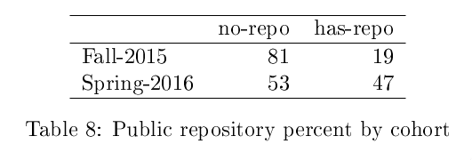

The Legislature’s intent is that The City University be supported as an independent and integrated system of higher education on the assumption that the University will continue to maintain and expand its commitment to academic excellence and to the provision of equal access and opportunity for students, faculty and staff from all ethnic and racial groups and from both sexes. The City University is of vital importance as a vehicle for the upward mobility of the disadvantaged in the City of New York. The pioneering efforts of the SEEK and College Discovery programs must not be diminished as a result of greater state financial responsibility.
Only the strongest commitment to the special needs of an urban constituency justifies the Legislature’s support of an independent and unique structure for the University. Activities at the City University campuses must be undertaken in a spirit which recognizes and responds to the imperative need for affirmative action and the positive desire to have City University personnel reflect the diverse communities which comprise the people of the city and state of New York.
Project Manager,

GC Digital Initiatives invites applicants for the inaugural Digital Research Bootcamp, an opportunity to develop digital research skills and connect with others in an interdisciplinary environment. The GC Digital Research Bootcamp is a four day workshop where you will learn how to use a range of digital tools and methods for doing research. There are multiple tracks targeted at different skillsets and disciplinary focuses.
Thank you
Created by Evan Misshula.